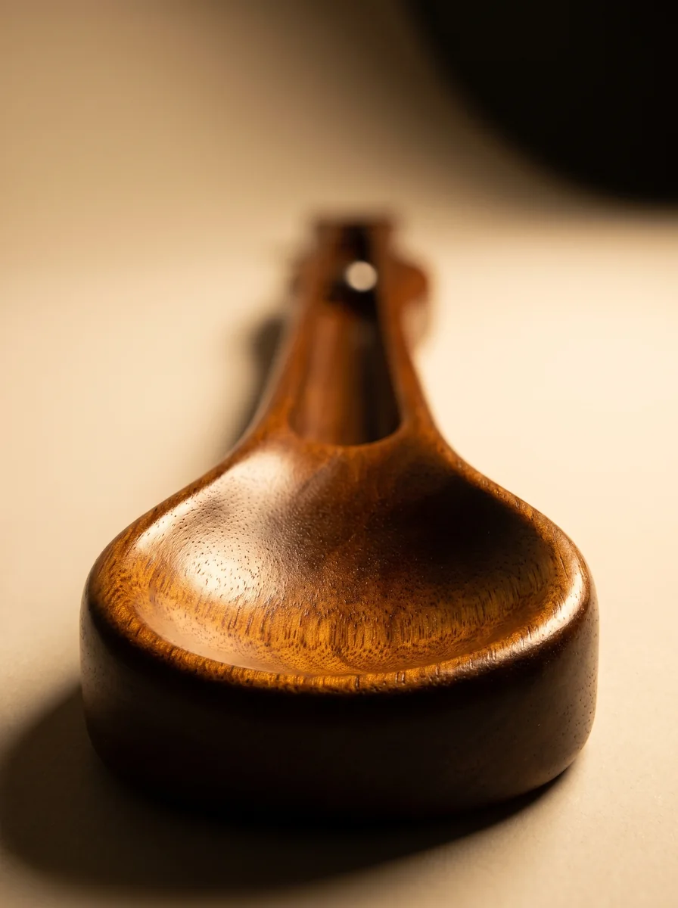
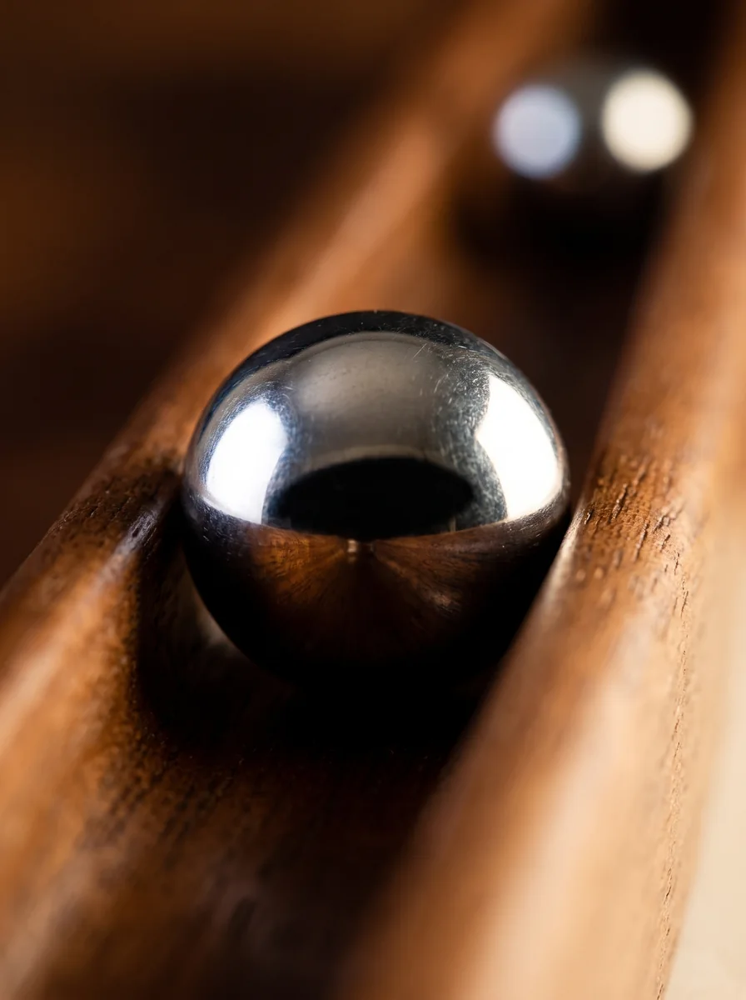
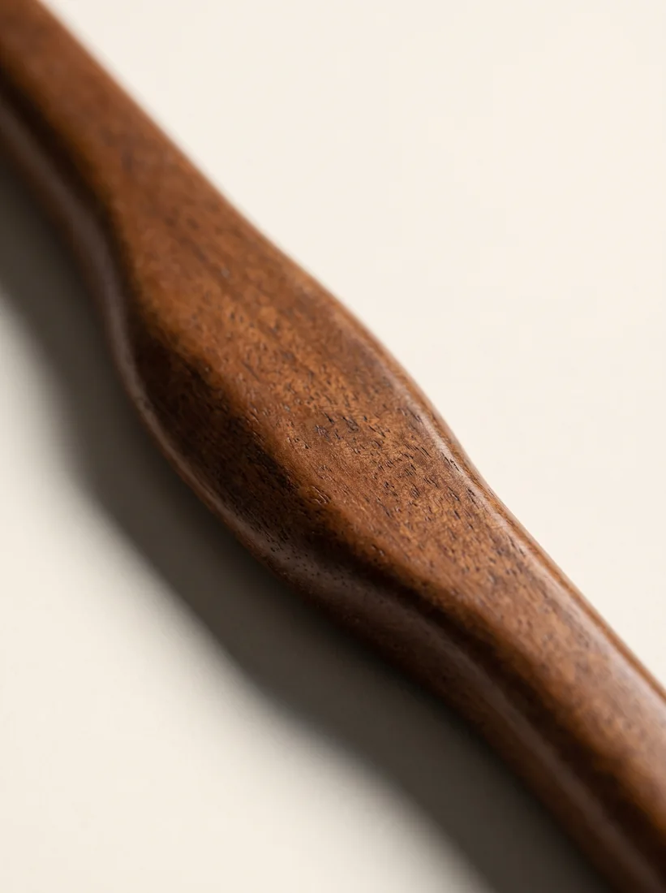
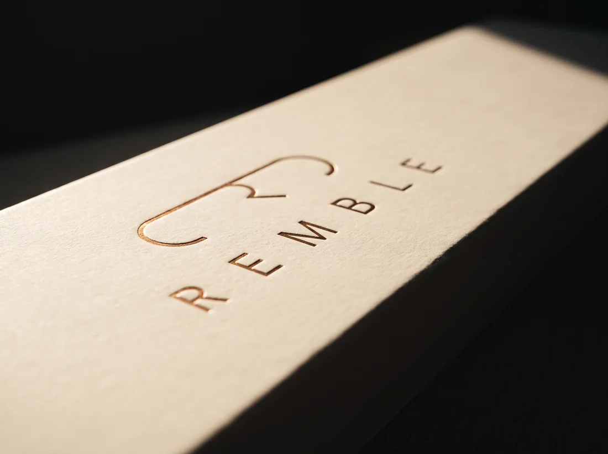

Tek parça ahşap El işçiliği
Grounding. Connection. Regulation.
Topraklanma · Bağlantı · Regülasyon
Remble, tek parça ahşaptan özenle işlendi; terapist eşliğinde kullanılmak ve terapötik sürece eşlik etmek için tasarlandı.
Remble’ı edininRemble nedir
İki ucundan kavranan uzun bir ahşap gövde, boydan boya uzanan bir kanal ve içinde tek bir çelik bilye. Remble sağa ve sola eğildikçe bilye kendi ağırlığıyla akar; göz onu takip eder, el ritmi kurar.
Yalnızca ahşap, çelik ve yerçekimi. Remble, dikkate izleyebileceği sakin ve öngörülebilir bir yol sunar. Görsel takip ve bedensel hareket, dikkatin şimdi ve burada kalmasını destekler.
Üç odak
Tek bir hareketin üç yönü

Grounding — Topraklanma
Ahşabın ağırlığı ve avuç içine oturan konkav uçlar, danışanın dikkatini bedene ve şimdi ve buraya geri çağıran fiziksel bir çıpa oluşturur.
Remble’ın ağırlığı, ahşabın dokusu ve bilyenin hareketi bedeni yeniden dikkatin merkezine taşır. Kolların hareket hâlinde kalması, danışanın bedensel temasını sürdürmesine ve bulunduğu ana yönelmesine yardımcı olur.

Connection — Bağlantı
İki ucundan kavranan Remble’da, bilyenin çift yönlü hareketi göz, beden ve dikkati ortak bir deneyimde buluşturur.
Bilyenin sağ-sol hareketi, çift yönlü uyaranı görsel takip ve bedensel duyumla birleştirir; danışanın şimdi ve burada kalmasını destekler.

Regulation — Regülasyon
Remble’ın ritmik hareketi, görsel takip ve bedensel duyumu aynı anda devrede tutarak danışanın duygusal yoğunluk içinde temasını sürdürmesini destekler.
Kolların hareket hâlinde kalması, kopma ve donma yönündeki tepkilere karşı bedensel katılımı koruyan bir zemin sunar.
Form
Tek parça ahşaptan
Remble, tek parça Ayous ahşaptan elde işlenir. Kavisli gövde ele doğal biçimde oturur; boydan boya uzanan kanal, bilyeyi bir uçtan diğerine kesintisiz taşır.


Kutu
Tasarımına yakışan bir sunum
Mıknatıslı kapaklı kutu, kadife yatak ve keten saklama kılıfı. Remble bir kutudan çıkar, bir rafta durur, bir masaya konur.



- Remble
- 2 Adet Yedek Çelik Bilye
- Keten Saklama Kılıfı
- Mıknatıslı Sunum Kutusu
Kimler için
Uzman elinde bir araç.
- Psikologlar
- Psikiyatristler
- EMDR ile çalışan terapistler
- Çocuk ve ergen alanında çalışan uzmanlar


S.S.S.
Sık sorulanlar
Remble bir tıbbi cihaz mı?
Hayır. Remble tanı koymaz, tedavi etmez ve tıbbi cihaz olarak sınıflandırılmaz. Ruh sağlığı alanındaki uzmanların seans içinde kullanması için tasarlanmış destekleyici bir araçtır.
Kutuda yedek bilye var mı?
Evet. Kutuda 2 adet yedek çelik bilye bulunur.
Kliniğim için toplu alım yapabilir miyim?
Evet. Klinik ve kurumlar için toplu tedarik mümkündür. İletişim bölümünden bize ulaşın.
Kliniğiniz için Remble
Ürün, toplu tedarik ve kurumsal kullanım hakkındaki tüm sorularınız için doğrudan bize yazabilirsiniz.
Bize yazın- E-posta
- info@rembletools.com
- @rembletools
- +90 5XX XXX XX XX